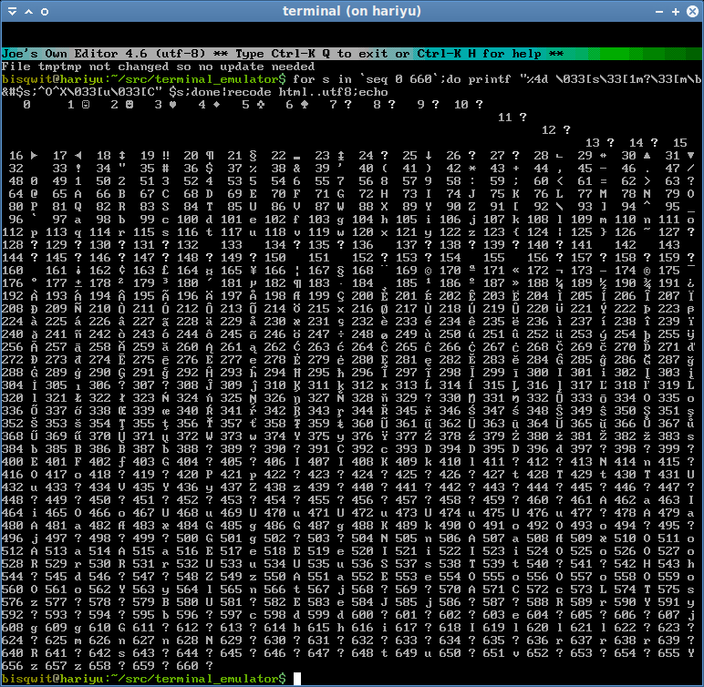

- Generated by
 1.9.1
1.9.1
|
That Terminal
A terminal emulator designed for video making purposes.
|
It’s the terminal that was featured in a programming livestream series on Bisqwit’s YouTube channel, at: https://www.youtube.com/watch?v=9e38ORrkbtc&list=PLzLzYGEbdY5nKCfUgfk8tCO9veao_P1fV

Supported:
Not supported (yet!)
This program is designed for programming video production purposes.
To install these dependencies in Debian GNU/Linux, you can use this command: apt-get install build-essential libsdl2-dev pkg-config libx11-dev googletest-tools lcov g++-12 (instead of 12, use what your system has available)
Check out the code from Git:
git clone https://github.com/bisqwit/that_terminal cd that_terminal git checkout origin/hy -b hy git submodule update --init --recursive # Do not forget this step!
To compile, type make -j4. To run, type ./term after compiling. Note that on the first start, the terminal may be slow to start, because it rebuilds the cache for fonts.
To build a debugging version, do make term_debug.
To build a profiling version, do make term_gprof.
To run unit+coverage tests, do make test.
To build a manual coverage testing version, do make term_gcov.
NOTE: When compiling, you may get a “__cur could be NULL” warning from the static analyzer of the compiler with reference to a vector<Cell>. This warning is bogus and should be ignored.
Compilation of modules within rendering/fonts module may take significant time. This is mainly because of the use of std::regex, which slows down compilation significantly.
Once you start the terminal, you can use the terminal according to how terminal emulators generally are used, by typing text.
There are a few special hotkeys supported by the emulator. These are documented in a separate document.
To quit the terminal emulator, either command the shell to exit (usually by typing exit and enter), or command the window manager to terminate the program (either by clicking the close-icon in the window title bar, or by entering a hotkey such as alt-F4).
A terminal emulator is a program that emulates a terminal.
A terminal is a device or a program that connects two things:
This communication is entirely text-based, and includes in-band signaling like the ANSI escape codes.
A terminal emulator converts keyboard input (including arrow keys) into a character stream, and reads character stream from the application and converts that into symbols, cursor movements, and colors, on the screen.
A terminal emulator is not a shell nor a command interpreter. It does not understand anything you type. It just converts those keys into a character stream and passes them to another program that hopefully does understand them.
Back in the early ages of computing, computers were extremely expensive. The typical architecture was such that you had one central computer, and a number of dumb terminals (and later, smart terminals).
These terminals were devices that… «drum roll»… translated between the user-interface and the input & output of the central computer. They had no computing capabilities of their own.
Over time as computers became cheaper, it became possible to run these text-based systems locally. The local computer then ran a terminal emulator to interface with these local systems, that still communicated using text streams.
The emulator emulates the terminal such as the VT100. The VT100 was a remarkable milestone in the history of glass screen based terminal emulators, started by the Datapoint 3300 and the DEC VT05. These devices were a giant’s leap of improvement over using a line printer for the display device.
Even in today’s time, many decades later, the system of combining a text-based stream and a terminal emulator remains a useful and efficient paradigm, and really, the de-facto way to maintain UNIX-style systems. Some people, such as yours truly, even use it as their primary user-interface for most tasks on the computer.
Even the Microsoft® Windows® Command Prompt utilizes a terminal emulator (Win32 Console), even though the division between console programs and the terminal emulator is not as obvious in Windows as it is in UNIX-style systems like Linux.
Modern terminal emulators not only emulate historic terminals like the VT100, VT220, VT240, VT340, VT420, and VT525, but also support other ANSI escape codes that have been created specifically for terminal emulators, such as the 256-color and 16777216-color SGR parameters, which are supported by my program as well.
It is a tool I use for creating videos. It is supposed to replace the DOSBox-based toolchain I have used until now. The input daemon is similarly being replaced, as is the tool that I use for generating the input in the first place.
It also seeks to make that editor obsolete, replacing it with Joe.
This terminal emulator fully supports single-width and double-width characters (such as CJK). The best font sizes to try that are 4x8, 6x9, 8x16, and 9x18, because they match perfectly with the CJK fonts at 8x8, 12x9, 16x16 and 18x18 at integer scaling. The 8x16 (+16x16) font has best coverage for Unicode, thanks to Unifont.
That terminal is written by Joel Yliluoma. You can find my homepage at: https://iki.fi/bisqwit/ And you can contact me through e-mail: bisqwit@iki.fi